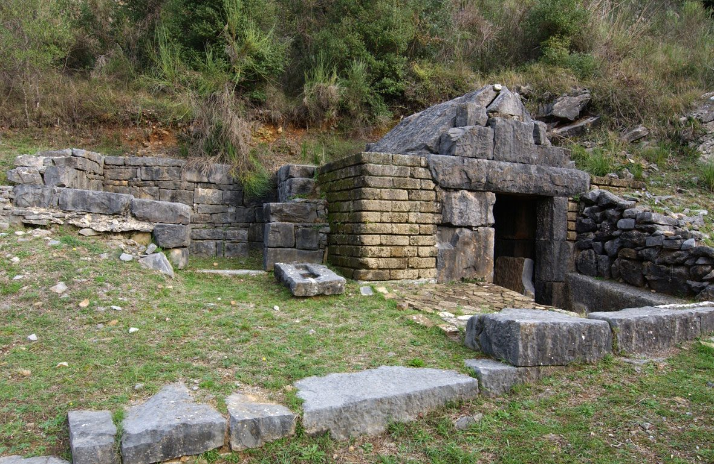

Home |
Le federazioni osche |
Localizzazione musei e siti |
Chi siamo |
Dove trovarci |
Nel Parco archeologico di Roccagloriosa, immerso nella natura, un tempo difeso da un circuito murario in parte ancora visibile, si visitano i resti di un fiorente insediamento databile tra il IV e il III secolo a.C. e inquadrato nell’ambito della civiltà lucana.
|
 |